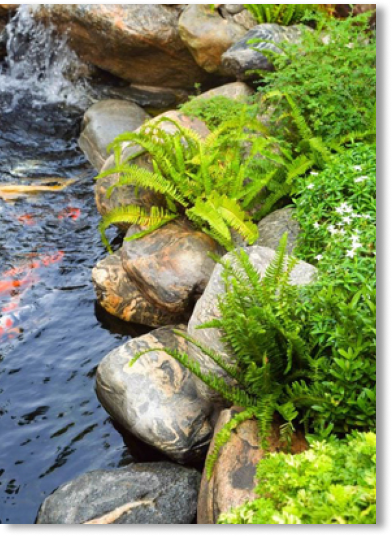

Hồ cá Koi ngoài trời cho gia đình.
Trong số các loại hồ cá ngoài trời thì hồ cá koi được lựa chọn nhiều
hơn cả nhất là tại các biệt thự cao cấp, khách sạn - nhà hàng sang
trọng,.....Hồ cá koi ngoài trời không chỉ giúp không gian trở nên
đẳng cấp, giá trị hơn mà còn mà còn mang tới nhiều sự may mắn cho
gia chủ bởi cá koi là loài cá tượng trưng cho sự may mắn, thịnh
vượng.
Xây dựng hồ cá theo phong thủy.
Trong số các loại hồ cá ngoài trời thì hồ cá koi được lựa chọn nhiều
hơn cả nhất là tại các biệt thự cao cấp, khách sạn - nhà hàng sang
trọng,.....Hồ cá koi ngoài trời không chỉ giúp không gian trở nên
đẳng cấp, giá trị hơn mà còn mà còn mang tới nhiều sự may mắn cho
gia chủ bởi cá koi là loài cá tượng trưng cho sự may mắn, thịnh
vượng.
Bảo dưỡng hồ cá tận nơi.
Trong số các loại hồ cá ngoài trời thì hồ cá koi được lựa chọn nhiều
hơn cả nhất là tại các biệt thự cao cấp, khách sạn - nhà hàng sang
trọng,.....Hồ cá koi ngoài trời không chỉ giúp không gian trở nên
đẳng cấp, giá trị hơn mà còn mà còn mang tới nhiều sự may mắn cho
gia chủ bởi cá koi là loài cá tượng trưng cho sự may mắn, thịnh
vượng.
CẢNH QUAN PHÚC AN NHIÊN
Cầu Bài, Yên Bái, Ba Vì, Hà Nội
Độc đáo từ thiết kế và xử lí không gian

TƯ VẤN
Phúc An Nhiên hỗ trợ tư vấn 24/7, đội ngũ nhân viên luôn sẵn sàng
phục vụ Quý Khách Hàng thân mến!
THI CÔNG
Phúc An Nhiên hỗ trợ tư vấn 24/7, đội ngũ nhân viên luôn sẵn sàng
phục vụ Quý Khách Hàng thân mến!
BẢO DƯỠNG
Phúc An Nhiên hỗ trợ tư vấn 24/7, đội ngũ nhân viên luôn sẵn sàng
phục vụ Quý Khách Hàng thân mến!
Tiểu cảnh hồ cá koi không chỉ được ưa chuộng ở các quán cafe mà còn
đang rất thịnh hành trong thiết kế sân vườn. Bài viết hôm nay, chúng
tôi sẽ giới thiệu đến bạn những mẫu tiểu cảnh đẹp cho hồ cá koi. Cùng
với đó là những lợi ích mà tiểu cảnh này mang lại.
không chỉ được ưa chuộng ở các quán cafe mà còn đang rất thịnh hành
trong thiết kế sân vườn. Bài viết hôm nay, chúng tôi sẽ giới thiệu đến
bạn những mẫu tiểu cảnh đẹp cho hồ cá koi. Cùng với đó là những lợi
ích mà tiểu cảnh này mang lại.
Ngày càng có nhiều gia đình lựa chọn thiết kế tiểu cảnh hồ cá koi cho
sân vườn của mình bởi những lợi ích sau.
Hồ Cá Koi Mẫu M001

 DỰ ÁN PHÚC AN NHIÊN
DỰ ÁN PHÚC AN NHIÊN
Xem chi tiết
Thiết kế sân vườn tiểu cảnh đẹp, hồ cá koi tại Hồ Chí Minh.
Từ lâu cá Koi (Cá chép Nhật Bản) được xem là một biểu tượng cho ước
vọng, lòng kiên trì và sức mạnh, vì thế hình ảnh cá Koi thường được
sử dụng rất nhiều trong...
Ngày đăng: 27/05/2023 | Lượt xem: 60
Top +10 tiểu cảnh đẹp khi thi công hồ cá cho sân vườn.
Từ lâu cá Koi (Cá chép Nhật Bản) được xem là một biểu tượng cho ước
vọng, lòng kiên trì và sức mạnh, vì thế hình ảnh cá Koi thường được
sử dụng rất nhiều trong...
Ngày đăng: 27/05/2023 | Lượt xem: 60
Những điều cần lưu ý khi tiến hành thi công xây dựng hồ cá koi.
Từ lâu cá Koi (Cá chép Nhật Bản) được xem là một biểu tượng cho ước
vọng, lòng kiên trì và sức mạnh, vì thế hình ảnh cá Koi thường được
sử dụng rất nhiều trong...
Ngày đăng: 27/05/2023 | Lượt xem: 60
Để giữ hồ cá luôn sạch đẹp chúng ta cần làm những gì?
Từ lâu cá Koi (Cá chép Nhật Bản) được xem là một biểu tượng cho ước
vọng, lòng kiên trì và sức mạnh, vì thế hình ảnh cá Koi thường được
sử dụng rất nhiều trong...
Ngày đăng: 27/05/2023 | Lượt xem: 60